About ⋆ . ˚
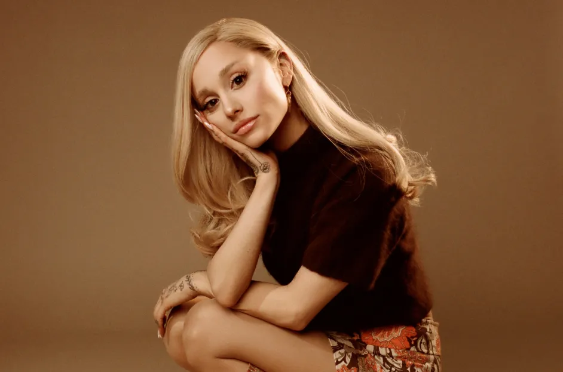
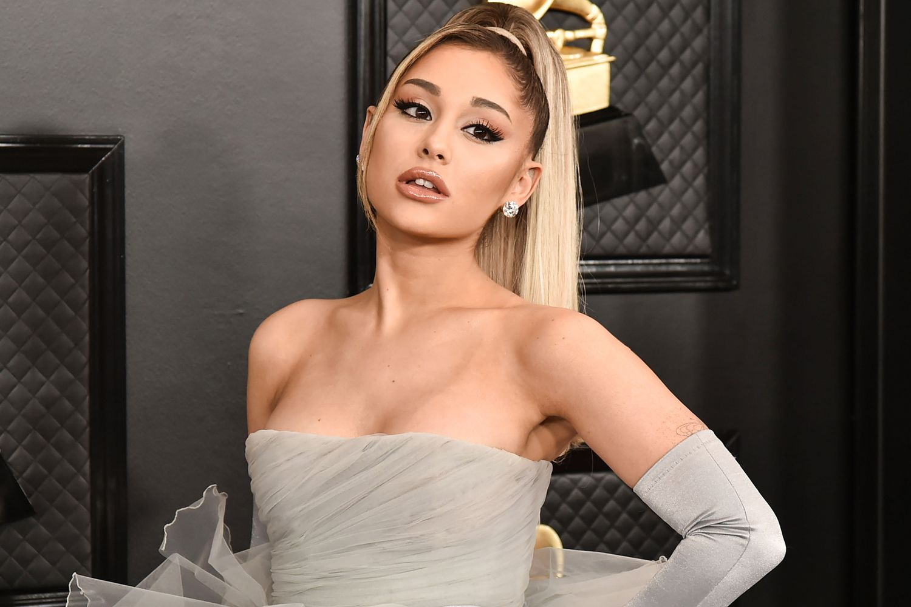
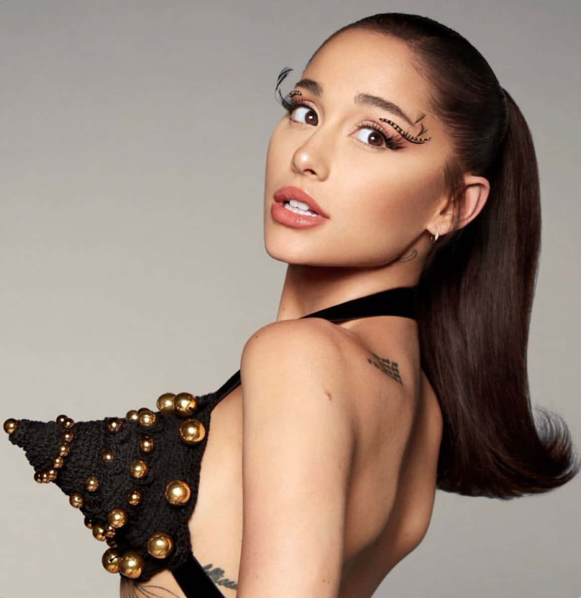
Ariana Grande-Butera (born June 26, 1993) is an American singer, songwriter, and actress. Following her debut at age 15 in the 2008 Broadway musical 13: The Musical, she gained popularity when she played the role of Cat Valentine on the Nickelodeon TV series, Victorious, and afterwards portrayed the same character on the spin-off with iCarly, Sam & Cat. Following her contract deal with Republic Records in 2011, Grande released her US chart-topping debut studio album Yours Truly in 2013, while the lead single "The Way", featuring Mac Miller, charted in the top ten of the US Billboard Hot 100. Yours Truly was met critical acclaim, with music critics praising Grande's wide vocal range.
Grande's second studio album, My Everything (2014), debuted at number-one on the Billboard 200, and spawned five singles, all of which were international successes. The lead single, "Problem", featuring Iggy Azalea, peaked at number two on the Billboard Hot 100, and has been certified sextuple platinum by the Recording Industry Association of America (RIAA) in March 2016. In 2016, Grande released her third studio album Dangerous Woman, which charted at number two on the Billboard 200. The album spawned four singles including the Billboard Hot 100 top-tens "Dangerous Woman", and "Side To Side", featuring Nicki Minaj, peaking at numbers 8 and 4 respectively, while "Into You" peaked at 13 in the US.
Her personal struggles influenced her trap-infused fourth and fifth studio albums, Sweetener (2018) and Thank U, Next (2019), which were both critical and commercial successes. The former won Grande a Grammy Award for Best Pop Vocal Album, while the latter received five nominations, including Album of the Year. With the singles of Thank U, Next: "Thank U, Next, "7 Rings", and "Break Up With Your Girlfriend, I'm Bored", Grande became the first solo artist to occupy the top three spots on the Billboard Hot 100 simultaneously.
In 2020, her collaborations "Stuck With U" with Justin Bieber and "Rain On Me" with Lady Gaga helped her break the record for most number-one debuts on the Hot 100, while the latter won the Grammy Award for Best Pop Duo/Group Performance. Grande's sixth studio album, Positions (2020), and its title track, debuted at number-one in the United States. In 2021, Grande was featured on the remix of The Weeknd's "Save Your Tears", with the song became her sixth number-one in the US. After taking time away from music to be a guest judge on The Voice and filming for Glinda Upland in Wicked, the remix was followed by another chart-topping remix with The Weeknd in 2023, this time being "Die For You." Grande released her seventh studio album, Eternal Sunshine on March 8, 2024. The album gave her two more Billboard Number 1's, being singles "Yes, And?" and "We Can't Be Friends (Wait For Your Love)", while all but two of the album tracks peaked in the top 50, the highest being "The Boy Is Mine" and "Supernatural", peaking at numbers 16 and 17 respectively.
Since her debut in 2013, Grande has been certified for 85.5 million units in the U.S.—making her the eighth most RIAA-certified female artist of all time. Having amassed 90 billion consumed streams thus far, Grande is the second most streamed female artist ever. She is also the most streamed female artist on Spotify and Apple Music. She has amassed 70 chart entries on the Billboard Hot 100—the fourth most entries for a female artist—including six number ones and 19 top-10 hits. Grande holds several Billboard Hot 100 chart records; she is the only artist to have five number-one debuts, to have their first five number one singles debut at the top spot, to have three number one-debuts in one calendar year, and to have all lead singles from each of her six studio albums debut in the top ten. In 2018, Billboard honored Grande as Woman of the Year. As of 2019, Grande has been the most followed woman on Instagram, with over 240 million followers.
Background ⋆ . ˚
Grande was cast in the Nickelodeon television show Victorious along with 13 co-star Elizabeth Gillies in 2009. In this sitcom, set in a performing arts high school, Grande played the "adorably dimwitted" Cat Valentine. She had to dye her hair red every other week for the role because the executive producer, Dan Schneider, did not want all the cast members to be brunettes, and the red hair was also a feature that the network felt would fit the personality of Cat. The show premiered in March 2010 to the second largest audience for a live-action series in Nickelodeon history with 5.7 million viewers. The role helped propel Grande to teen idol status, but she was more interested in a music career, stating that acting is "fun, but music has always been first and foremost with me." Her character was compared to "Brittany Murphy's performance as the hapless Tai in Clueless" (1995) and described as being "very impressionable and easily swayed" but "generally sweet". In 2010, she played the role of Miriam in the musical Cuba Libre, written and produced by songwriter Desmond Child.
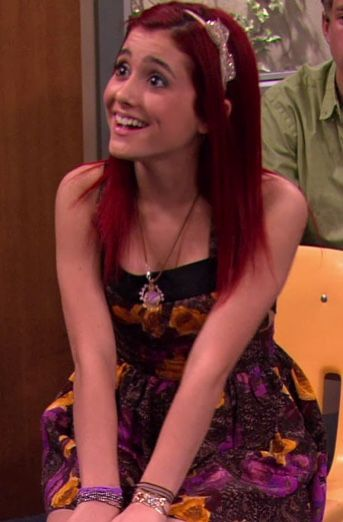
After the first season of Victorious wrapped, Grande wanted to focus on her music career and began working on her debut album in August 2010. To strengthen her vocal range, she began working with vocal coach Eric Vetro. She made her first musical appearance on the track "Give It Up" on the soundtrack Victorious: Music from the Hit TV Show in August 2011. While filming Victorious, Grande made several recordings of herself singing covers of songs by Adele, Whitney Houston and Mariah Carey, and uploaded them to YouTube. A friend of Monte Lipman, CEO of Republic Records, came across one of Grande's videos. Impressed by her vocals, he sent the links to Lipman, who signed her to a recording contract. She released her first single, "Put Your Hearts Up", in December 2011, which was recorded for a teen-oriented pop album that was not issued. She later disowned the track for its bubblegum pop sound, saying that she had no interest in recording music of that genre. The song was later certified gold by the RIAA. Also in 2011, she voiced the fairy Princess Diaspro in 13 episodes of the Nickelodeon version of the Italian animated television series Winx Club, appeared in Greyson Chance's music video for a song called "Unfriend You" from his album Hold On 'til the Night, portraying Chance's ex-girlfriend, and voiced the title role in the English dub of the Spanish-language animated film Snowflake, the White Gorilla
On a second soundtrack for Victorious, Victorious 2.0, released on June 5, 2012, as an extended play, Grande supplied vocals for a cover of "Don't You (Forget About Me)". After four seasons, Victorious was not renewed. The finale aired in February 2013. The third and final Victorious soundtrack, Victorious 3.0, was released on November 6, 2012, featuring Grande duetting with Victoria Justice in the song "L.A. Boyz". A music video of the song followed. In December 2012, Grande collaborated on the single version of "Popular Song", a duet with British singer and songwriter Mika. She also starred as Snow White in a pantomime-style musical theatre production called A Snow White Christmas, together with Charlene Tilton and Neil Patrick Harris at the Pasadena Playhouse. Grande played Amanda Benson in Swindle, a 2013 Nickelodeon film adaptation of the children's book of the same name.
Meanwhile, Nickelodeon created Sam & Cat, an iCarly and Victorious spin-off starring Jennette McCurdy and Grande. Grande and McCurdy reprised their respective roles as Cat Valentine and Sam Puckett on the buddy sitcom, which paired the characters as roommates who form an after-school babysitting business. The pilot aired on June 8, 2013, and the show was immediately picked up by the network. The following month, Nickelodeon doubled Sam & Cat's original 20-episode order for season one, making it a 40-episode season. Despite its success in the ratings, the series was canceled after 36 episodes. The final episode aired on July 17, 2014.
Yours Truly & My Everything ⋆ . ˚
Grande recorded her first studio album Yours Truly, originally titled Daydreamin' , over a three-year period. It was released on August 30, 2013. She is credited as a songwriter on several tracks of the album. In September 2013, it debuted at Number one on the US Billboard 200 albums chart, with 138,000 copies sold in its first week, making Grande the first female artist since Kesha to have her first album debut atop the charts and ranking her the 15th female artist overall. Yours Truly also debuted in the top 10 in several other countries, including Australia, the UK, Ireland, and the Netherlands. By April 2014, the album had sold over 500,000 copies in the United States, and later it became Grande's first platinum album.
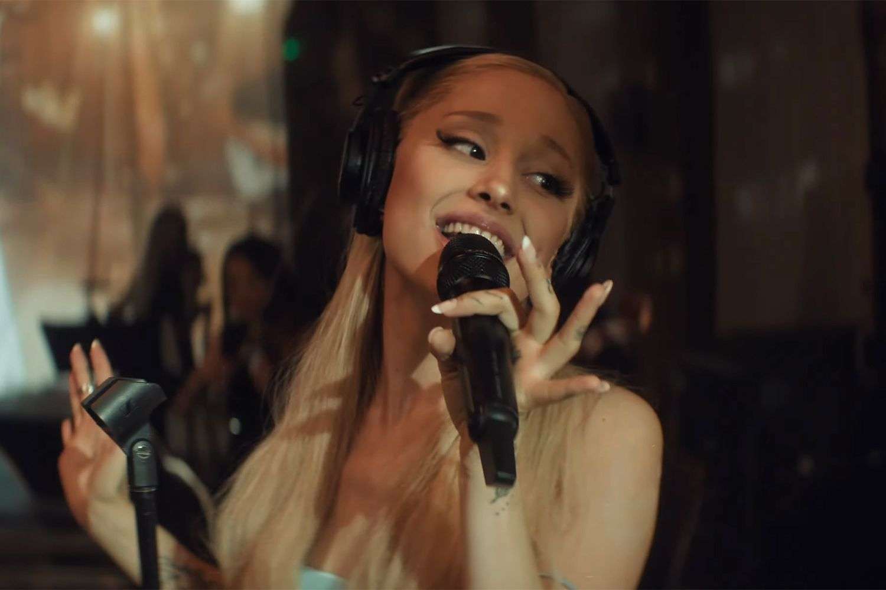
The lead single "The Way", featuring Pittsburgh rapper Mac Miller, debuted at number 10 on the US Billboard Hot 100, eventually peaking at number nine for two weeks, and spent 26 weeks on the Hot 100. Grande was later sued by Minder Music for copying the line "What we gotta do right here is go back, back in time" from the 1972 song "Troglodyte (Cave Man)" by The Jimmy Castor Bunch. Sam Lansky of Time magazine called the song "breezy, catchy throwback soul [that] showed off her towering voice." Following the release of the album, Billboard magazine ranked Grande at number four on their list of "Music's Hottest Minors 2013", an annual ranking of the most popular musicians under the age of 21. The second single, "Baby I", debuted at number 21 on the US Billboard Hot 100 chart, making it her second Top 40 hit. The song also debuted at number six on the US Billboard Hot Digital Songs chart, making Grande the only female music artist to debut two songs in the top 10 of the Hot Digital Songs chart during the year 2013. The third single, "Right There", featuring Detroit rapper Big Sean, debuted at number 84 on the Billboard Hot 100 chart.
Grande recorded the duet "Almost Is Never Enough" with Nathan Sykes of The Wanted. She also joined Justin Bieber on his Believe Tour for three shows and kicked off her own headlining mini-tour, The Listening Sessions. At the 2013 American Music Awards, she won the award for New Artist of the Year. She released a four-song Christmas EP, Christmas Kisses in December 2013. Christmas Kisses received critical praise for its "R&B spin" on the Christmas classics. Grande received the Breakthrough Artist of the Year award from the Music Business Association, recognizing her achievements throughout 2013, including her number one debut on the Billboard 200 and her top 10 single on the Hot 100.
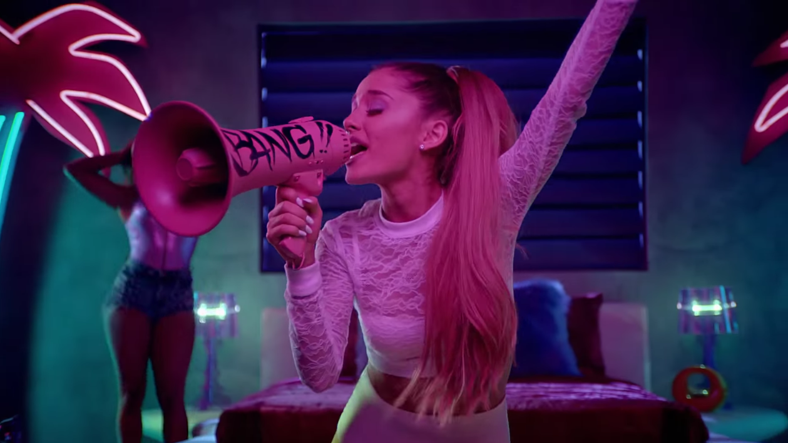
By January 2014, Grande had begun recording her second studio album, with singer-songwriter Ryan Tedder and record producers Benny Blanco and Max Martin. Grande is credited as a songwriter on several tracks of the album. The same month, she earned the Favorite Breakout Artist award at the People's Choice Awards 2014. In March 2014, Grande sang at the White House concert, "Women of Soul: In Performance at the White House". The following month, President Barack Obama and First Lady Michelle Obama invited Grande again to perform at the White House for the Easter Egg Roll event.
Grande released her second studio album My Everything on August 25, 2014. It sold 169,000 copies in its first week and debuted atop the Billboard 200, becoming her second consecutive number one album in the US. Its lead single "Problem" features Australian rapper Iggy Azalea and premiered at the 2014 Radio Disney Music Awards on April 27. The song debuted at number three (eventually climbing to number two) on the Billboard Hot 100, and debuted at number one on the UK Singles Chart, becoming Grande's first number one single in the United Kingdom. It made British chart history as the first song to land at No. 1 based on sales and streams. The song was the highest debut ever for a collaboration of female soloists. The second single, "Break Free", featuring German musician and producer Zedd, peaked at number four on the Billboard Hot 100 and number one on the Hot Dance/Electronic Songs. She performed the song as the opening of the 2014 MTV Video Music Awards, and won Best Pop Video for "Problem". She and Nicki Minaj provided guest vocals on "Bang Bang", the lead single from Jessie J's album Sweet Talker. The song reached number three in the US, making it Grande's third song in the Hot 100's top 10 the same week ("Problem", "Break Free" and "Bang Bang"), and went to number one in the UK. She joined Adele as the only female artist with three top 10 hits simultaneously as a lead artist. The music video for "Bang Bang" has been viewed more than one billion times on YouTube. My Everything spent 88 weeks on the Billboard 200. Rolling Stone magazine wrote, "My Everything is where the 21-year-old Nickelodeon starlet grows up. It's a confident, intelligent, brazen pop statement, mixing bubblegum diva vocals with EDM break beats". Billboard's review noted that My Everything is not kid-friendly, like Grande's earlier efforts, and "pulled more sounds into her repertoire while keeping her biggest weapon, a remarkable vocal range, as a steady foundation."
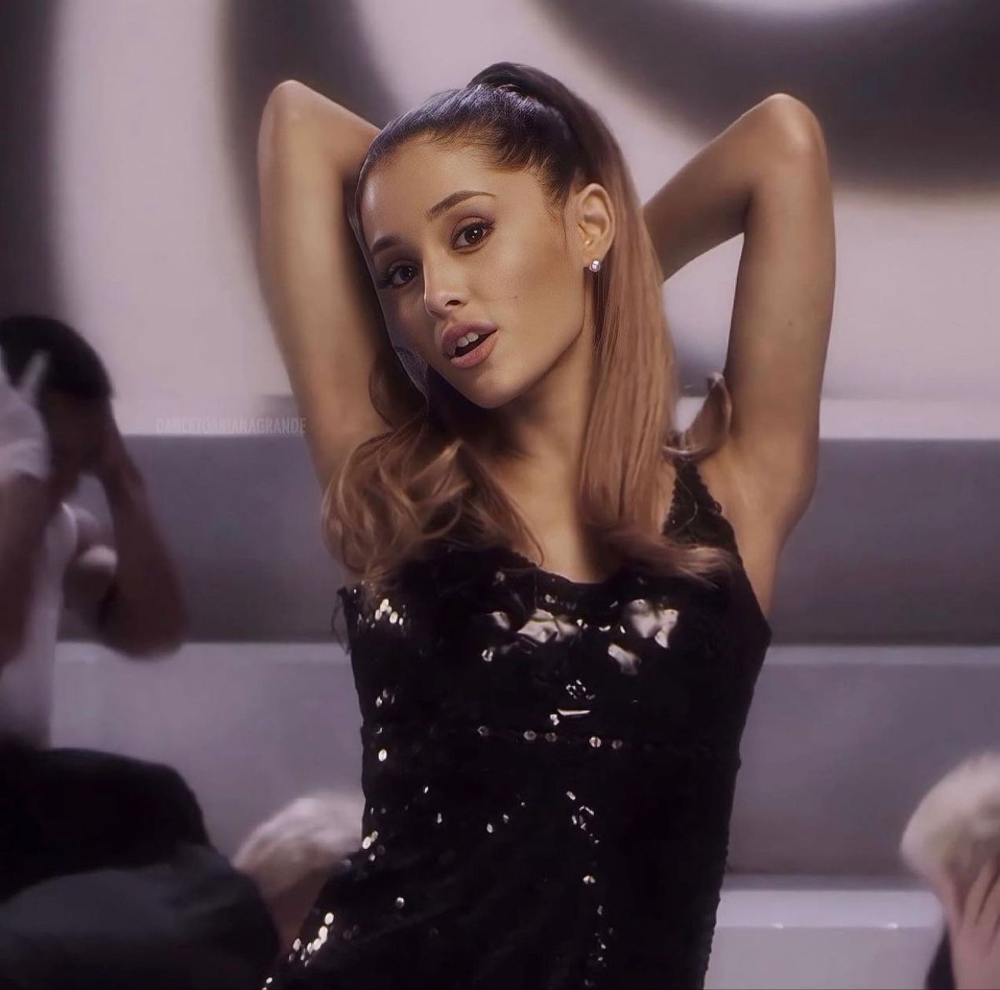
On September 27, 2014, Grande was the musical performer on the season 40 premiere of NBC's Saturday Night Live, with Chris Pratt as the host. Three days later, the third single from My Everything, "Love Me Harder", featuring Canadian singer-songwriter The Weeknd, debuted on the Billboard Hot 100, later peaking at No. 7. In November 2014, Grande was featured in Major Lazer's song "All My Love", which was released as the fourth single from the soundtrack album for the film The Hunger Games: Mockingjay - Part 1. The same month, Grande released a Christmas song titled "Santa Tell Me". Spending 34 consecutive weeks in the top 10 of the Billboard Hot 100 in 2014, Grande had the most top 10 singles of any artist that year. She later released a fifth single from My Everything, "One Last Time", which peaked at No. 13 on the Billboard Hot 100. By April 2015, the album had sold over 600,000 copies in the US and is certified double platinum by the RIAA.
In early 2015, Grande embarked on The Honeymoon Tour, with shows in North America, Europe, Asia and South America. Following the tour's early success, more dates were added, and the tour concluded in October 2015 after a total of nearly 90 dates. It earned approximately $40 million and sold over 800,000 tickets. Reviews of the tour performances generally praised Grande's vocals and ability to convey emotion in the songs but found the concerts to be over-produced: "[S]ome judicious editing would've elevated the evening from surprising to satisfying and possibly even shockingly good. As it is, Grande is so busy piling on the spectacle she neglects to highlight the one thing - those deceptively powerful pipes - setting her apart from her contemporaries."
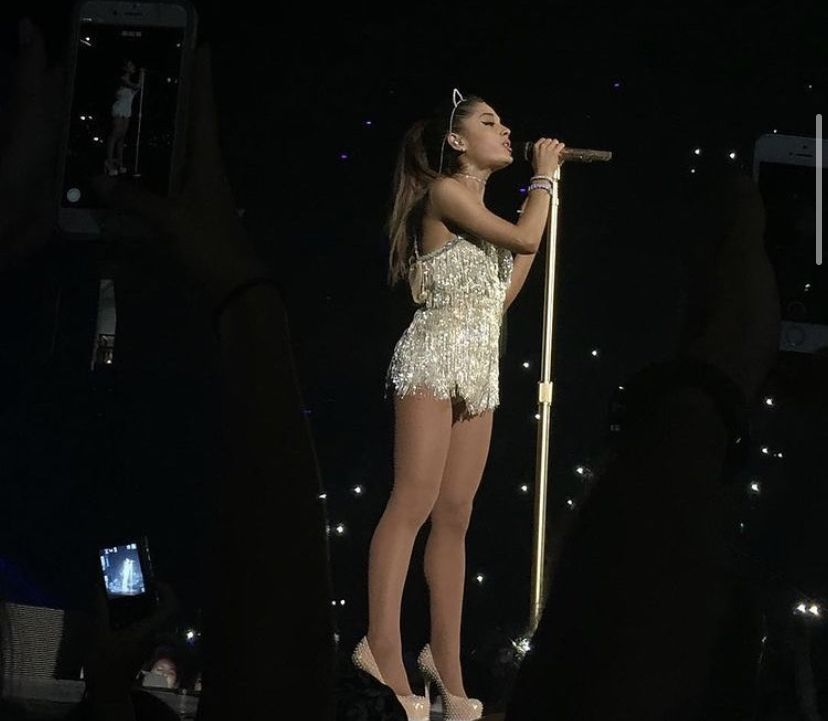
Grande was featured on Cashmere Cat's song "Adore", which was released in March during her Honeymoon Tour; a review in USA Today said: "Grande's towering vocals have never sounded better than on this offbeat R&B track." Also in 2015, Grande guest-starred on several episodes of the Fox comedy-horror TV series Scream Queens as Chanel #2. Grande filmed an episode for the Fox TV reality series Knock Knock Live, but the show was canceled before her episode aired.
Grande began recording songs for her third studio album, originally titled Moonlight, in 2015. In October of that year, she released the single "Focus", initially intended as the lead single from the album; the song debuted at number 7 on the Hot 100. The song's music video has been viewed more than a billion times on YouTube. She also signed an exclusive publishing contract with Universal Music Publishing Group covering her entire catalogue, duetted in Italian with Andrea Bocelli on the track "E Più Ti Penso" from his album Cinema and on an accompanying video, covered the song "Zero to Hero" from the film Hercules for the compilation album We Love Disney. Grande also released her second Christmas EP, Christmas & Chill, which debuted at number 34 on the Billboard 200 and number three on Billboard's Holiday Albums chart.
Dangerous Woman ⋆ . ˚
In March 2016, Grande released "Dangerous Woman" as the lead single from the retitled album of the same name. The single debuted at number 10 on the Billboard Hot 100 and was Grande's seventh top 10 entry on that chart. She is the first person in the history of the Hot 100 to have the lead single from each of her first three albums debut in the top 10. The song later peaked at number 8 on the Hot 100. On March 12, 2016, Grande appeared as host and musical guest of Saturday Night Live, where she performed "Dangerous Woman" and debuted the promotional single "Be Alright", which she released on March 18. The song charted at number 43 on the Billboard Hot 100. Grande garnered positive reviews for her appearance on the show, including praise for her impressions of various singers, some of which she had done on The Tonight Show. Jonathon Dornbush of Entertainment Weekly wrote that Grande "not only nailed her musical performances, but also shone as the best part of some of the night's sketches", including a "shockingly good" Jennifer Lawrence impression, continuing, "Grande proved she could hold her own amongst the SNL players." Stephanie Webber of Us Weekly praised Grande's Judy Garland scene as a cheeky, boozy starship commander. Grande won an online voting poll on Entertainment Weekly as the "best host of the season". In May 2016, among other appearances to promote the album, on The Voice's season 10 finale, Grande performed the second single from the album, "Into You", which peaked at No. 13 on the Billboard Hot 100, and duetted with Christina Aguilera on "Dangerous Woman".
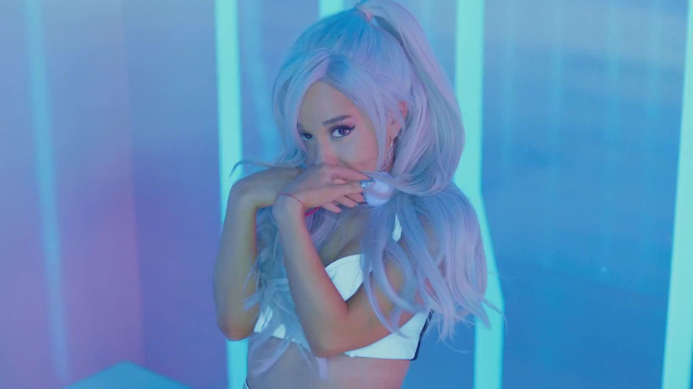
Grande released her third studio album Dangerous Woman on May 20, 2016; it debuted at number two on the Billboard 200, number one in the UK, number two in Japan, and number one in several other markets, including Australia, the Netherlands, Ireland, Italy and New Zealand. Nolan Feeney commented in Entertainment Weekly that Grande "pulls off pop, R&B, reggae, and house - all without overextending herself or pandering to trends". Mark Savage, writing for BBC News, called the album "a mature, confident record". At the Summertime Ball at London's Wembley Stadium in June, Grande performed three songs from the album as part of her set. In August, Grande released a third single from the album, "Side To Side", featuring rapper Nicki Minaj, her eighth top 10 entry on the Hot 100, which peaked at number four on that chart. The song's music video has been viewed more than 1.5 billion times. The album and the title track were each nominated for 2017 Grammy Awards. As of June 2018, Dangerous Woman has spent a total of 100 weeks on the Billboard 200.
Also in 2016, Grande made a cameo appearance in the comedy film Zoolander 2 starring Ben Stiller and Owen Wilson. She also collaborated with MAC Cosmetics on a makeup collection, donating 100% of proceeds to the MAC AIDS Fund, and launched a fashion line in collaboration with Lipsy London. In August 2016, Grande performed a tribute to Whitney Houston on the season finale of the ABC TV show Greatest Hits and headlined the opening night of Billboard' s Hot 100 Festival, performing a nearly hour-long set of her own songs. Grande filmed a commercial for T-Mobile that premiered in October 2016. She played Penny Pingleton in the December 2016 NBC television broadcast Hairspray Live!. Sonia Saraiya wrote in Variety that Grande was the show's "MVP, acting as both reliably overlook-able sidekick and, once the situation required it, showstopping diva." The same month, Grande performed "Faith", together with Stevie Wonder, on the season finale of The Voice; they collaborated on the song for the soundtrack of the 2016 film Sing. She also participated in the Jingle Ball Tour 2016.
Grande began her Dangerous Woman Tour in February 2017 in North America and then Europe. Reviewing the concert for Las Vegas Weekly, Ian Caramanzana wrote: "Grande's burly, soulful vibrato and wide range remain the star of her show, and she's at her best when it's just her, a microphone and her band - especially when she performs ... ballads." Jon Pareles of The New York Times called the concert "a show of confidence, prowess and aplomb. ... Her agile soprano was strong and unconcealed in every song." On May 22 at Grande's concert at the Manchester Arena in Manchester, England, a suicide bomber detonated an explosive in the foyer of the arena, causing 22 fatalities and more than 500 injuries.
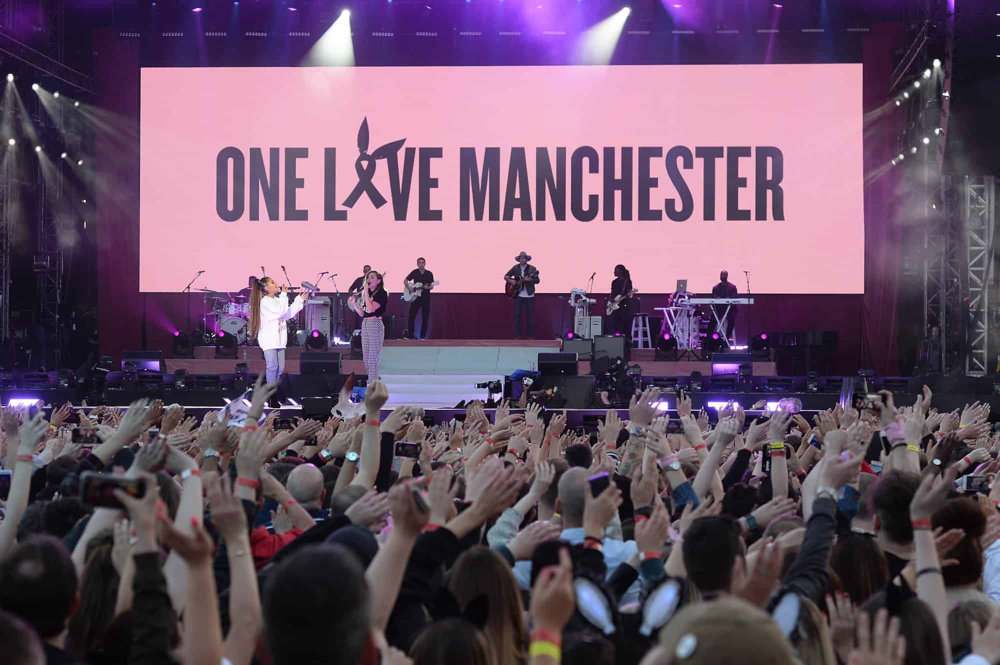
Grande suspended the tour until June 7 and held a televised benefit concert, One Love Manchester, on June 4 at the Old Trafford Cricket Ground in Manchester, helping to raise $23 million to aid the bombing victims and affected families. Grande, Justin Bieber, Katy Perry, Miley Cyrus, and other artists performed. To recognize her efforts, the City Council named Grande the first honorary citizen of Manchester. The tour resumed in Europe, Latin America, Asia and Oceania. It ended in September 2017, earning more than $71 million and selling over 875,000 tickets.
The same year, Grande recorded the title track of the soundtrack for the 2017 live-action remake of Disney's Beauty and the Beast with John Legend. She also appeared in an Apple Music Carpool Karaoke episode, singing musical theatre songs with Seth MacFarlane, and became a brand ambassador for Reebok. Even without releasing a new album in 2017, Grande became Billboard' s Female Artist of the Year". Grande has released six fragrances with Luxe Brands since 2015. They had grossed over $150 million in global sales by 2017.
Sweetener & Thank U, Next ⋆ . ˚
Grande began working on songs for the album with Pharrell Williams in 2016, but "the events in Manchester gave a hard reset to the project's expectations". On April 20, 2018, Grande released "No Tears Left To Cry" as the lead single from her fourth studio album, Sweetener, along with a music video for the song. The song debuted at number three on the Billboard Hot 100, where it became Grande's ninth single to reach the top ten in the United States and made her the only artist to have debuted the first single from each of her first four albums in the top ten of the Hot 100. She performed "No Tears Left To Cry" on the Tonight Show on May 1, where she revealed the title of the album, Sweetener. On May 7th, Ariana attended the Met Gala for the first time in a custom Vera Wang Sistine Chapel dress, which many believed was themed towards Sweetener at the time.
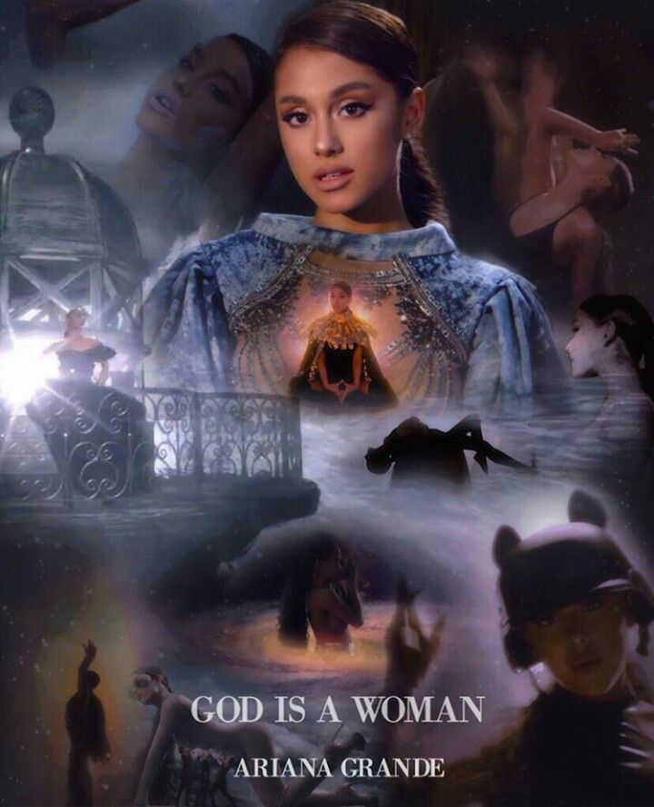
The album was made available for pre-order on June 20, 2018, along with the promotional single "The Light Is Coming", featuring rapper Nicki Minaj. The album's second single, "God Is A Woman", was released on July 13, 2018. It peaked at number 8 on the Hot 100 and was Grande's 10th song to reach the top 10 on that chart. The album was released on August 17, 2018. Grande gave four concerts to promote the album, billed as The Sweetener Sessions, at New York City's Irving Plaza, The Vic Theatre in Chicago, Ace Theater in Los Angeles, and KOKO in London between August 20 and September 4, 2018. Sweetener debuted at number one on the Billboard 200 and received acclaim from critics.
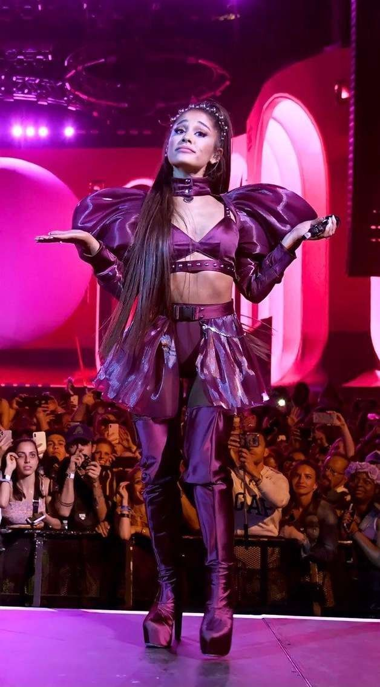
On November 3, 2018, Grande released "Thank U, Next" from her fifth studio album of the same name. The song reached number one in the United States, the United Kingdom, Australia, Canada, Estonia, Finland, Greece, Ireland, Malaysia, New Zealand, Portugal, Singapore and South Korea. Later, on January 3, 2019, it was announced that Grande would be headlining the Coachella Valley Music and Arts Festival. She made history as the youngest artist to ever headline the event and just the fourth female.
On March 18, Grande embarked on her fourth concert tour, the Sweetener World Tour, which had three legs - North America, Europe, and North America again. During the tour, Grande was testing her make up brand, R.E.M. Beauty
On June 27, 2019, Grande announced that she co-executive produced the soundtrack to the 2019 film Charlie's Angels. A collaboration with Miley Cyrus and Lana Del Rey, titled "Don't Call Me Angel", was released as the lead single from the soundtrack on September 13, 2019.
On December 22, 2019, Grande concluded her Sweetener World Tour in Inglewood, California, and released a live album of the tour, titled K Bye For Now (SWT Live).
Positions & R.E.M Beauty ⋆ . ˚
Grande began working on her sixth studio album in January 2020, altought the original song ideas files are dated back in may 2019. On May 8, 2020, Grande released "Stuck With U" with Justin Bieber, which debuted atop the US Billboard Hot 100, being her third chart-topping single. A collaboration with Lady Gaga, titled "Rain On Me", was released as the second single from Gaga's sixth studio album Chromatica on May 22, 2020. It debuted atop the US Billboard Hot 100, being Grande's fourth chart-topping single and making her the first artist in history to achieve four number one debuts.
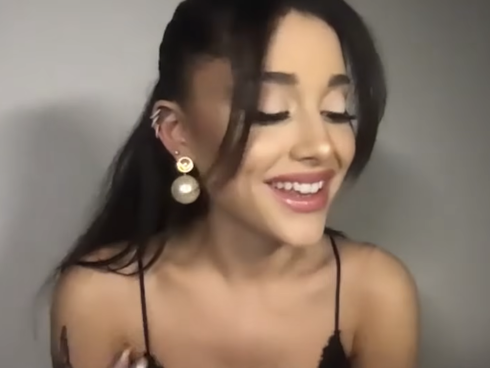
On October 14, 2020, Grande announced that her sixth studio album would be released the same month. On October 23, 2020, Grande released "Positions" from her sixth studio album of the same name. "34+35" was released as the second single from the album on October 30, 2020. A deluxe version of Positions was released on February 19, 2021, with four new songs and a remix of "34+35" featuring Doja Cat and Megan Thee Stallion.
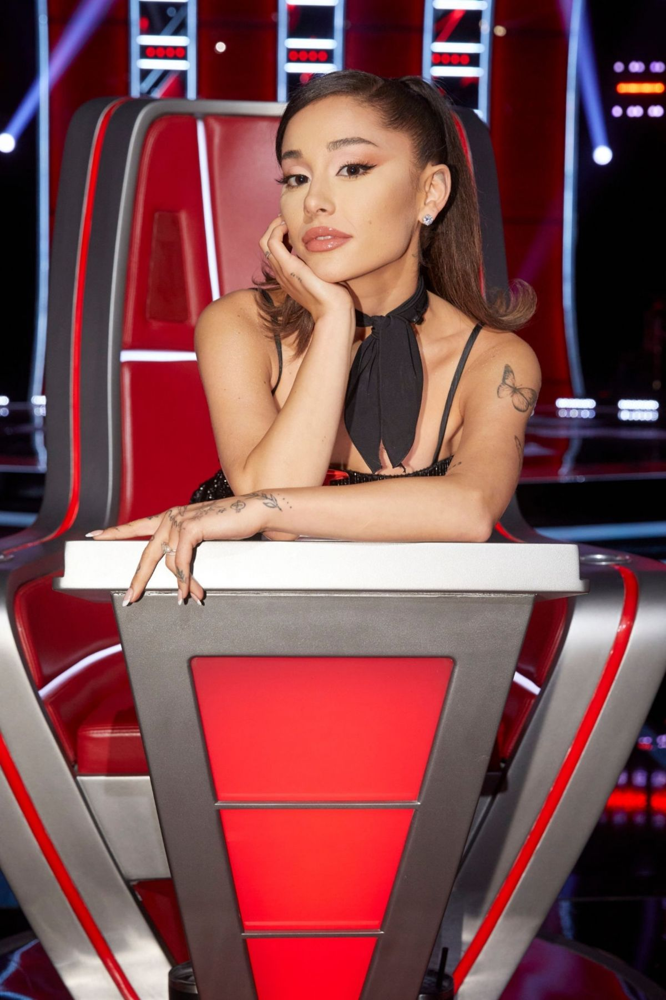
In March 2021, it was announced that Grande would join the coaching panel of the twenty-first season of The Voice. It was reported that she would receive $20-25 million for the season, making her the highest-paid coach in the show's history. On March 14, 2021, Rain On Me became the first all-female collaboration to win a Grammy Award for Best Pop Duo/Group Performance. Grande appeared on American singer Demi Lovato's latest album Dancing with the Devil... the Art of Starting Over on the song "Met Him Last Night", which she also co-wrote. Grande would collaborate with Canadian artist The Weeknd once again on a remix of one of his singles titled "Save Your Tears", which was released on April 23, 2021. The remix reached number one on the Billboard Hot 100, becoming both artist's sixth number one single.
Grande opened the 2021 iHeart Radio Music Awards alongside The Weeknd, performing the 2021 single "Save Your Tears", they collaborated again in 2023 and released the remix of "Die For You". In November 2021 she founded a cosmetic line called R.E.M. Beauty to "empower you with the tools you need to bring your most vivid, limitless, and creative dreams to life."
Eternal Sunshine, Petal, Wicked - Present ⋆ . ˚
On January 7, 2024, Grande announced "Yes, And?" as the lead single of Eternal Sunshine. On January 11, 2024, Ariana posted a trailer for the lead single's music video, which featured critics being harsh about Grande's absence in the music industry. Right at the beginning, a red card would be shown that said "AG7" and included coordinates leading to Montauk, where the movie "Eternal Sunshine of the Spotless Mind" was filmed, confirming the album title. Later that day, Ariana also liked an Instagram post made by a fan account which shared a short clip from said movie. On January 12, 2024, the lead and highly-anticipated comeback single "Yes, And?" was released.
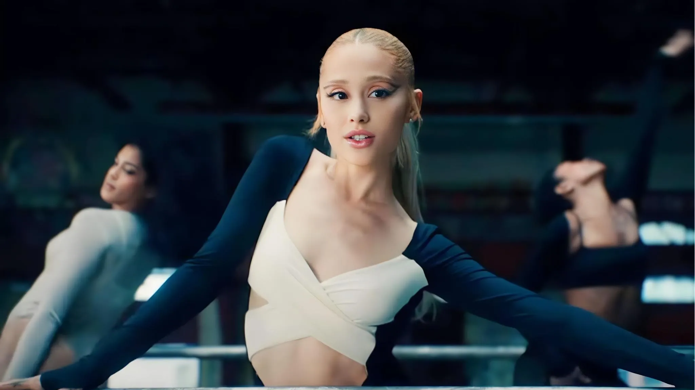
On January 17, 2024, Ariana announced her 7th studio album "Eternal Sunshine" which will be released on March 8, 2024. She also revealed an alternative cover and the standard cover for the album. The 2 covers have been added to her website to pre-order as CDs and LPs. They also have a target exclusive cover available for pre order as CDs or LPs. Ariana had also revealed 3 alternative covers for the album, similar to Positions. On January 19, 2024, Apple and Amazon Music uploaded the album, showing it to be 13 tracks long, with "Yes, And?" being track 9, and five explicit songs. Grande announced the fifth album cover on January 27, 2024 and showed a part of the tracklist revealing the songs "Intro (End of the World)" and "Eternal Sunshine". She also announced the second album cover, revealing her high blonde ponytail and one of the tattoos on her neck.

In a video that Grande uploaded on February 1, 2024 which is from November 2023, she was talking about the album and shared the news with her team, friends and family. She showed them a possible tracklist and was in general talking about the genre and her inspiration. The video is from the same day as the picture Grande took with the girls in an elevator. Grande announced the sixth album cover on February 7, 2024 and posted a story showed a part of the tracklist, revealing the songs "Bye", "Supernatural" and "We Can't Be Friends (Wait For Your Love)". She also announced the third album cover, which shows her in twelve different angles and positions. On February 17, 2024, she revealed cover #7 along with new tracks, "Don't Wanna Break Up Again", "True Story", and "I Wish I Hated You" On February 27. 2024, Grande revealed the remaining tracks ("Saturn Returns", "The Boy Is Mine", "Imperfect for You", and "Ordinary Things") as Spotify posted the track lengths. The digital album cover also changed to the second alternative cover the same day. On March 1, 2024, Grande announced the second single for the album, "We Can't Be Friends (Wait For Your Love)", set to release alongside the album.

On May 6th, 2024, Grande attended the 2024 Met Gala for the second time in a beautiful "Mother of Pearl dress" made by Loewe. This was her first met gala since 2018. Ariana even held a private performance at the event and wore a stunning "Tinkerbell-themed" dress. Some parts of the performance were posted on her social media. On May 7, 2024, "the boy is mine" was revealed to be the third single promoting the album.
It was announced that Grande would be in the upcoming double feature movie Wicked, playing Glinda alongside Cynthia Erivo, who was cast as Elphaba, and the movie was released in theaters on November 22, 2024, and the second part is going to be released in theaters on November 21, 2025. On March 2, 2025, Grande attended the annual Academy Awards alongside her Wicked co-star Cynthia Erivo, and has performed the songs "Somewhere Over The Rainbow" and "Defying Gravity". She received her first Oscar nomination for "Best supporting actress".
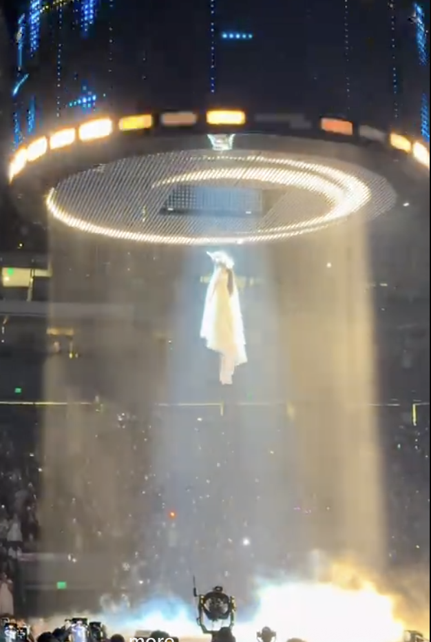
A year later, on March 28, 2025, the highly anticipated deluxe edition of the album - eternal sunshine deluxe: Brighter Days Ahead including six new tracks, the extended edition of "intro (end of the world)", "warm", "dandelion", "past life", "Hampstead" and the single "twilight zone". Alongside the album, she released the short movie Brighter Days Ahead, where she is portraiting important events of her life while singing the albums songs. It was her directional debut.
On May 30, 2025, it was announced that Grande would be joining to original cast for the fourth movie adaptation of Meet The Parents officially titled as Focker In-Law, coming out on November 25, 2026.
On April of 2026, Grande revealed the working of a new album titled "petal" that is set to release on July 31st. Later, Grande kicked off the start of the Eternal Sunshine Tour on June 2026, performing many songs off of Eternal Sunshine as well as older songs from all her other albums except Sweetener. Public sructiny and citicism following the apperance of Grande, especially amplified though the Petal music video, led to her deciding to take a long break from public appearance and the music industry to focus on her health right after the conclusion of the Eternal Sunshine Tour.
Relationships ⋆ . ˚
In 2008, Grande started dating Graham Phillips. They were in a relationship for three years before they broke up in December 2011. She and her back-up dancer Jordan Viscomi then started dating. A few months later, they broke up. They dated from December 2011 to mid 2012.
In October 2012, Grande began dating Jai Brooks, a member of the Australian YouTube group "The Janoskians" after meeting through Twitter. They had a long-distance relationship until December 2012, when they met for the first time in New York City. However, Grande and Brooks broke up in August 2013. Shortly after, Brooks accused Grande of cheating on him.

In September 2013, after weeks of speculation, Grande and Nathan Sykes from the British boyband "The Wanted" confirmed their relationship on Twitter. In late January 2014, Grande confirmed in a radio interview that she and Sykes had decided to end their five-month long relationship, but remained close friends.
Grande and Brooks dated once again between January 2014 and July 2014. They broke up again after he allegedly was not supportive of Grande when her grandfather passed away.
In August 2014, Grande began dating rapper Big Sean, who had been her friend for some time and was with Grande when her grandfather passed away. A fan spotted them leaving a movie theater and claimed that Grande and Big Sean were kissing, and at the 2014 MTV VMAs they were seen holding hands after Grande performed "Bang Bang"; on October 13, she publicly confirmed that they were dating amidst the rumors. Though in April 2015, it was discovered that the two had broken up. According to Grande, they had actually broken up months before it went public.
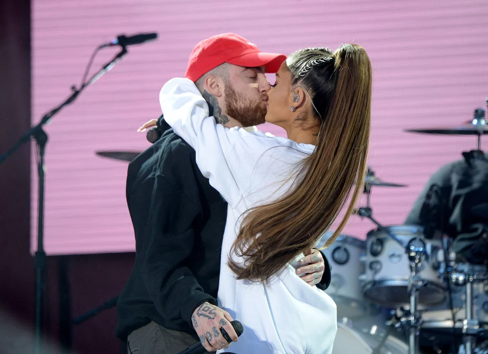
On April 5, 2015, it was revealed that Grande had started dating her backup dancer, Ricky Alvarez. The relationship was kept private until TMZ leaked a video of Grande licking a donut and kissing Alvarez. They eventually broke up in July 2016.
In August 2016, Grande started dating rapper Mac Miller, who was previously featured on her song "The Way" and on a remix of her song "Into You". She was also featured on Miller's song "My Favorite Part" from his album The Divine Feminine. Miller performed at Grande's One Love Manchester benefit concert held after the Manchester attack. On May 10, 2018, Grande announced that she and Miller had broken up, although they remained close friends. After Miller's death, Grande posted a photo of her late ex-boyfriend with no caption as a tribute.
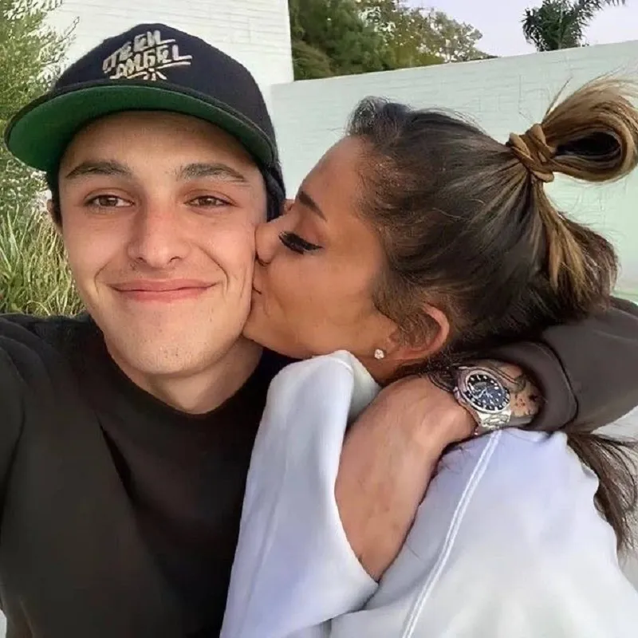
In May 2018, it was reported that Grande had begun dating actor and comedian Pete Davidson. They first met in March 2016 when Grande hosted Saturday Night Live, on which Davidson is a cast member. In June 2018, Grande confirmed that she and Davidson were engaged. A song dedicated to him titled "Pete Davidson" is featured on Grande's fourth studio album, Sweetener. The two called off their engagement and ended their relationship in October 2018.
In March 2020, it was reported that Grande had been dating luxury real estate agent Dalton Gomez for two months. In May 2020, Grande confirmed the relationship in the music video for "Stuck With U". In December 2020, Grande announced that she and Gomez are engaged. Grande and Gomez married in a private ceremony on May 15, 2021.
On July 17th, 2023, it was reported that Grande and Gomez had separated and filed for a divorce in January 2023. They allegedly attempted to reconcile, but were unsuccessful. On July 20th, 2023, it was reported that Grande and her Wicked co-star, Ethan Slater, had began dating. The two of them attended many award shows and ceremonies together between the years 2024 and 2025.
In early June 2026 the news made it public that Grande and Slater broke up months prior, after an almost 3 year relationship. They remain as friends. A month later, it was revealed that Grande had got back together with her ex-boyfriend, Rickey Alvarez.
Religion ⋆ . ˚
Grande was raised in a Roman Catholic household but abandoned Catholicism due to the church's stance on homosexuality. She has since started following Kabbalah's teachings with her half-brother Frankie. These teachings, according to Grande, state that the basis of life lies in the idea that if you're kind to others, good things will happen to you.
Philanthropy ⋆ . ˚
At the age of 14, Grande co-founded the youth singing group Kids Who Care in South Florida, which performed for charitable fund-raising events, raising over $500,000 for charities in 2007 alone. In the summer of 2009, as a member of the charitable organization Broadway in South Africa, Grande performed and taught music and dance to children in Gugulethu, South Africa, along with her brother Frankie. Grande also partnered with Kleenex on its "Shield Sneeze Swish" campaign. In 2017, she hosted One Love Manchester, a benefit concert to raise money for all of the victims of the Manchester bombing on May 22nd, 2017. She raised 13 million dollars from this event.
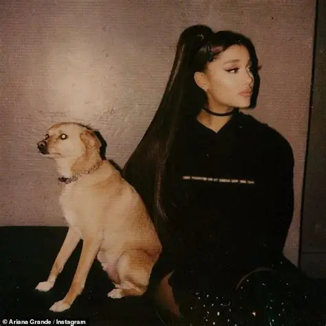
In September 2017, Grande performed in A Concert for Charlottesville which benefitted the victims of the August 2017 white nationalist rally in Charlottesville, Virginia. In March 2018, she participated in March for Our Lives to support gun control reform. Grande donated the proceeds from the first show in Atlanta on her Sweetener World Tour to Planned Parenthood in a response to the passage of a number of anti-abortion laws in several states including Georgia. During the COVID-19 pandemic, Grande donated between $500 and $1,000 each to a number of fans as financial support. Grande also supported a COVID-19 fund named Project 100, which aimed to provide $1,000 digital payments to 100,000 families who have been greatly impacted by the pandemic. In May 2020, Grande announced that all net proceeds from her collaboration with singer Justin Bieber, "Stuck With U", would be donated to the First Responders Children's Foundation to fund grants and scholarships for children of frontline workers who are working during the global pandemic. That month, Grande joined a Los Angeles protest against the murder of George Floyd, demanding justice and asking fans to sign petitions condemning the act of police brutality. She highlighted white privilege and called for more activism outside social media. In December 2020, Grande, and Scott and Brian Nicholson, her choreographers and friends, launched "Orange Twins Rescue", an animal rescue center based in Los Angeles. In the same month, Grande surprised kids, who spend the holiday at children's hospitals in L.A. and the UK, with gifts from wish lists at the UCLA Mattel Children's Hospital and the Royal Manchester Children's Hospital.
In June 2021, Grande, along with a dozen other celebrities signed an open letter to Congress to pass the Equality Act highlighting the Act would protect "marginalized communities". In the same month, Grande partnered with the online portal BetterHelp, and gave away $2 million worth of therapy to fans. On International Transgender Day of Visibility, she launched a fund for transgender youth, pledging to match every donation up until $1.5 million. In May 2022, Grande was among 160 artists and influencers, who signed a 'Bans Off Our Bodies' full-page advertisement in The New York Times, in support of abortion rights in the US. In June, Grande endorsed Karen Bass for 2022 Los Angeles mayoral election.
Sources ⋆ . ˚
Navigation Bar - Black & White Flower Image - Source: https://png.pngtree.com/png-vector/20240312/ourmid/pngtree-black-and-white-cute-flower-png-image_11935120.png
About - Ariana Grande Photo Shoot Image - Source: https://www.vogue.com/article/eternal-sunshine-ariana-grande-29-thoughts
About - Ariana Grande Grammys 2020 Image - Source: https://people.com/ariana-grande-celebrates-first-music-in-3-years-8425621
About - Ariana Grande Voice Outfit Image - Source: https://x.com/ArianaWorldHQ/status/1603099013498212354
Background - Ariana Grande Cat Valentine Image - Source: https://i.pinimg.com/736x/d0/25/c5/d025c5ea7d4a96d4388864a4e9468a19.jpg
Yours Truly & My Everything - Ariana Grande Yours Truly 10th Anniversary Image - Source: https://people.com/thmb/ysXG8fRHNqWtNpHaMUpwYfMbXrU=/1500x0/filters:no_upscale():max_bytes(150000):strip_icc():focal(787x410:789x412)/ariana-grande-honeymoon-avenue-live-from-london-082523-1-e7c3d8f9963046fe8dd3fa5b63274616.jpg
Yours Truly & My Everything - Ariana Grande Bang Bang Music Video Image - Source: https://favim.com/pd/s4/orig/150107/ariana-grande-bang-bang-jessie-j-bang-bang-Favim.com-2366314.png
Yours Truly & My Everything - Ariana Grande Problem Music Video Image - Source: https://i.pinimg.com/originals/12/cc/84/12cc841d89fe0deb34005b972792d1dc.jpg
Yours Truly & My Everything - Ariana Grande Honeymoon Tour Image - Source: https://i.pinimg.com/originals/b1/1e/4c/b11e4c27867fd0bfbb208b5eca0bb046.jpg
Dangerous Woman - Ariana Grande Focus Music Video Image - Source: https://wallpaperaccess.com/full/5266141.jpg
Dangerous Woman - Police Alert during the Manchester Arena Bombing Image - Source: https://www.billboard.com/wp-content/uploads/2020/08/manchester-bombing-2017-billboard-1548-1597942069.jpg?w=942&h=623&crop=1
Dangerous Woman - Ariana Grande One Love Manchester Image - Source: https://awesomejelly.com/wp-content/uploads/2017/06/one-love-manchester.jpg
Sweetener & Thank U, Next - Ariana Grande God Is A Woman Poster Image - Source: https://m.media-amazon.com/images/M/MV5BODYyNGI3Y2ItZDg2ZC00ODU1LTgxYjktOWJhZTdmYThiNGM2XkEyXkFqcGc@._V1_.jpg
Sweetener & Thank U, Next - Ariana Grande in the Sweetener World Tour Image - Source: https://i.pinimg.com/originals/c2/72/1b/c2721bab4c8b3ee565882a5d1af71c1b.jpg
Positions & R.E.M Beauty - Ariana Grande Appearance during the Live Stream for 34+35 (remix) Image - Source: https://www.youtube.com/watch?v=5ahkLW00XTI&t=634s
Positions & R.E.M Beauty - Ariana Grande in Season 21 of The Voice Image - Source: https://www.hawtcelebs.com/wp-content/uploads/2021/10/ariana-grande-the-voice-season-21-promos-2021-12.jpg
Eternal Sunshine, Petal, Wicked - Present - Ariana Grande in the yes, and? Music Video Image - Source: https://wallpapercave.com/wp/wp13688539.png
Eternal Sunshine, Petal, Wicked - Present - Ariana Grande in the Met Gala 2024 Image - Source: https://hips.hearstapps.com/hmg-prod/images/gettyimages-2151790260-663967c22d83d.jpg?resize=980:*
Eternal Sunshine, Petal, Wicked - Present - Ariana Grande as Glinda in Wicked Image - Source: https://akns-images.eonline.com/eol_images/Entire_Site/2023318/rs_1200x1200-230418101033-1200-Ariana-Grande-LT-041823-SPL5538031_081.jpg?fit=around|1080:1080&output-quality=90&crop=1080:1080;center,top
Eternal Sunshine, Petal, Wicked - Present - Ariana Grande during the Supernatural Performance EST Image - Source: https://www.tiktok.com/@.miagrandebutera/video/7649662932795559181
Relationships - Ariana with Nathan Sykes Image - Source: https://i2-prod.irishmirror.ie/incoming/article2356197.ece/ALTERNATES/s1200c/Nathan-Sykes-and-Ariana-Arande-main.jpg
Relationships - Ariana with Mac Miller Image - Source: https://media1.popsugar-assets.com/files/thumbor/80-UZBN46qUmshv6zq1Zt57PXZc/fit-in/1024x1024/filters:format_auto-!!-:strip_icc-!!-/2017/06/13/971/n/1922398/f1426f8cdea509b7_GettyImages-692327048/i/Ariana-Grande-Mac-Miller-Cutest-Pictures.jpg
Relationships - Ariana with Dalton Gomez Image - Source: https://images.lifestyleasia.com/wp-content/uploads/sites/5/2023/07/18123024/Ariana-Gomez.jpg
Philanthropy - Ariana Promoting the Orange Twins Rescue - Source: https://tse1.explicit.bing.net/th/id/OIP.jHxiVB6KwnxItLCWEemfgQAAAA?r=0&rs=1&pid=ImgDetMain&o=7&rm=3
font "Karrilee" obtained from svg icons is licensed by CC BY 4.0
ALL OF THE WRITTEN MATERIAL ABOVE WERE COMPLETELY SOURCED AND TAKEN FROM THE OFFICIAL ARIANA GRANDE FANDOM WITH MINOR MODIFICATIONS. THE LINK TO THE WIKI IS HERE: https://arianagrande.fandom.com/wiki/Ariana_Grande